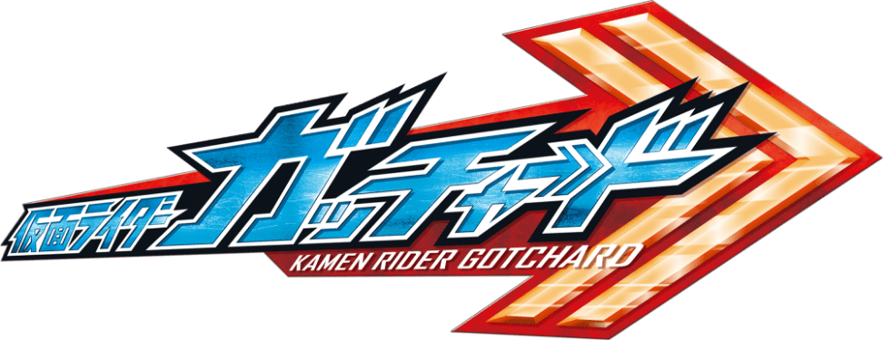
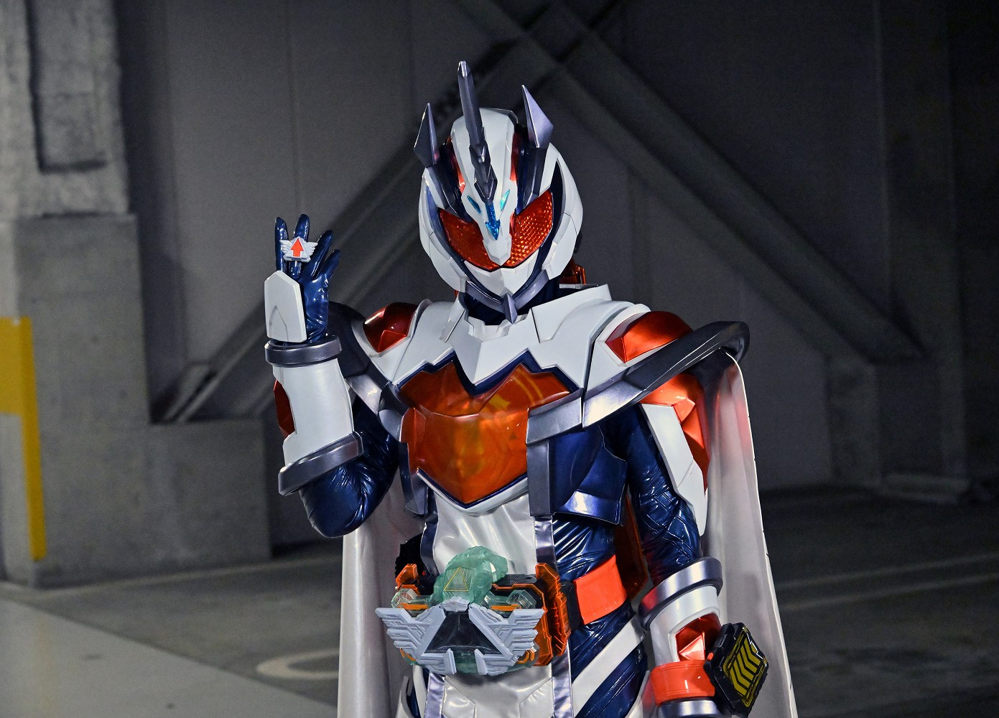
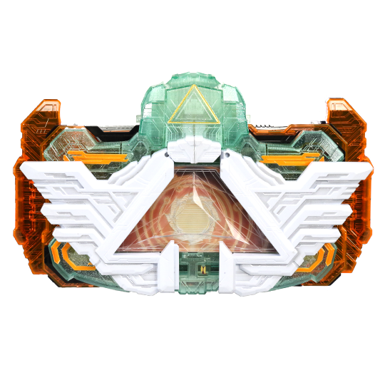
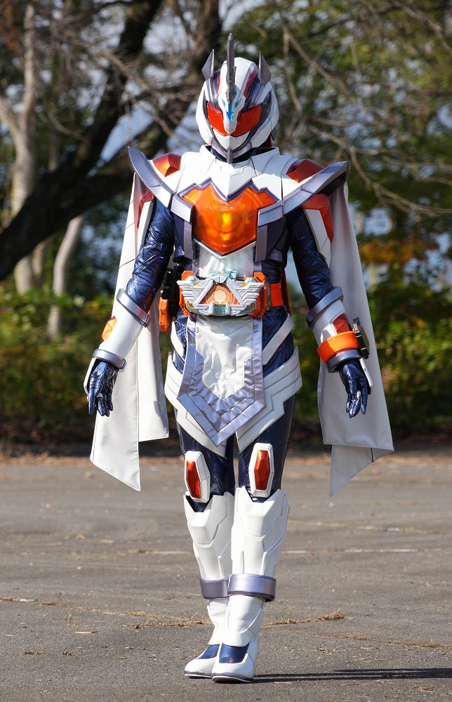
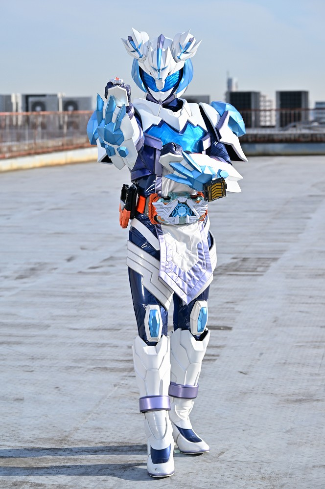
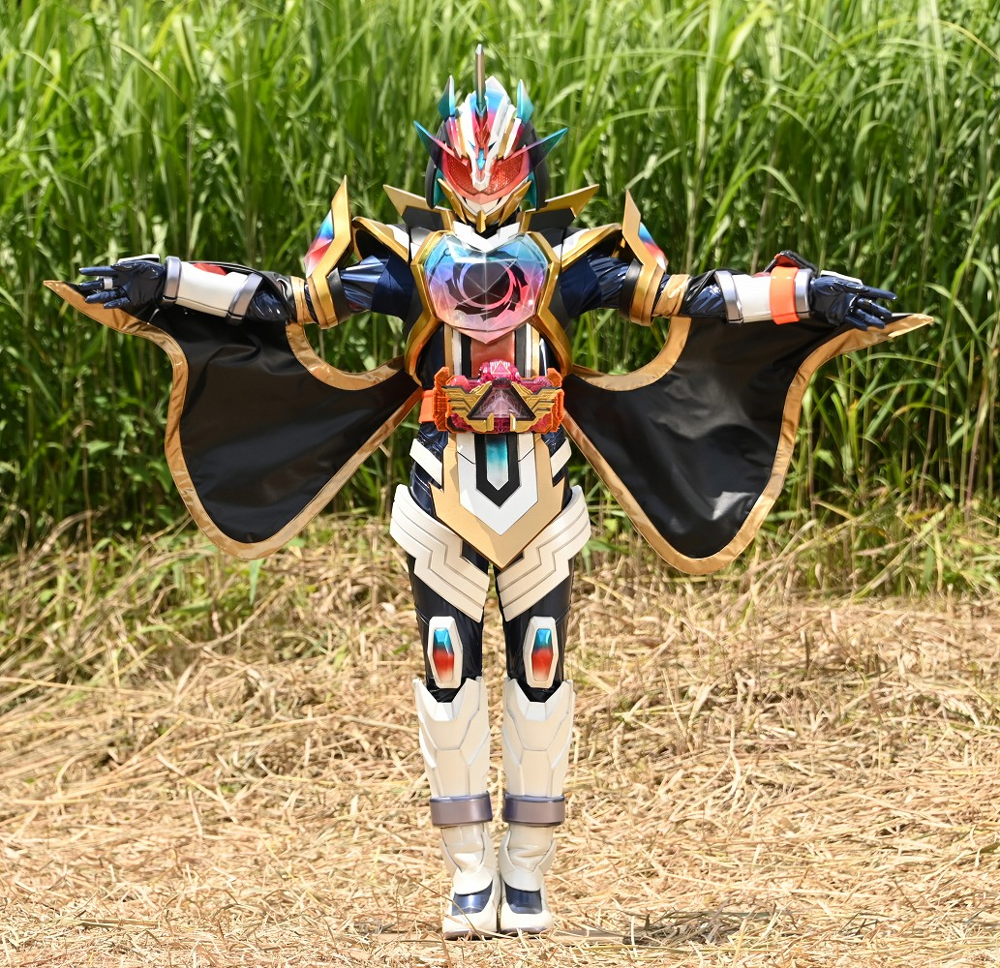

2023年から放送された「仮面ライダーマジェード」に登場する仮面ライダー
変身者は九堂りんね。アルケミスドライバーと2枚のライドケミーカードを使い変身する。
基本形態はサンユニコーン。
身長：197.9cm 体重：70.7kg パンチ力：7.9t キック力:9.2t ジャンプ力：ひと跳び15.8m 走力：100mを7.1秒程度
アルケミスドライバーにハイアルケミストリングをかざし
２枚のライドケミーカードを装填し変身する。
ケミーカードにはレベルナンバーが表記されており、２枚のレベルを合わせて１０になれば
変身することができる。
（カードにも相性があり、ただ１０になればいいって話ではない。）

アルケミスドライバーはガッチャードライバーと原型は同じであるが、
こちらはハイアルケミストリングを用いて高等物質錬金機能により、
変身を可能にする。このドライバーはマジェードとウインドが使用する。

サンユニコーン
「ザ・サン」と「ユニコン」ライドケミーカードで変身
あらゆるものを貫く灼熱の格闘攻撃と、強烈な輝きを放つ推奨を錬成し、
それを砕き、破片を敵に飛ばす。
また、対象のダメージを回復させるヒーリング機能も備えている。

ムーンケルベロス
「ネミネムーン」と「ヨアケルベロス」ライドケミーカードで変身
敵を宙に浮かせ、そこに高速の連撃を叩き込む格闘攻撃を得意とする。

トワイライトマジェード
「トワイライトユニコン」と「トワイライトザ・サン」ライドケミーカードと
プロミスアルケミストリングをかざして変身
冥黒の力への対抗能力を持ち、光と闇の力を加えた錬成を駆使する。
相手への灼熱の攻撃と味方の回復の相反する能力を行える、オールラウンダー。
仮面ライダー一覧